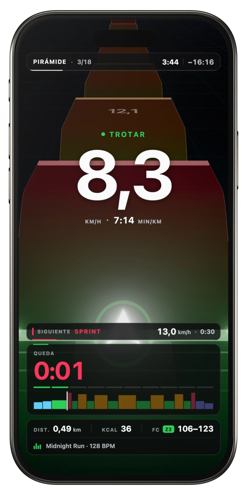
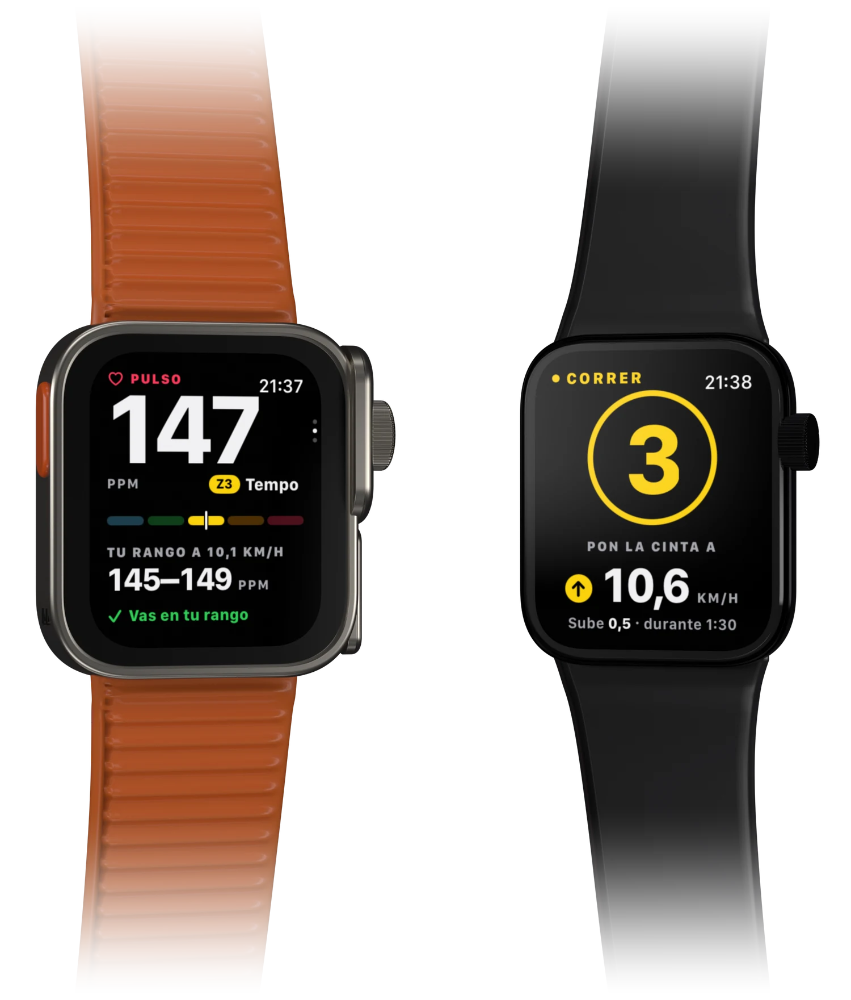
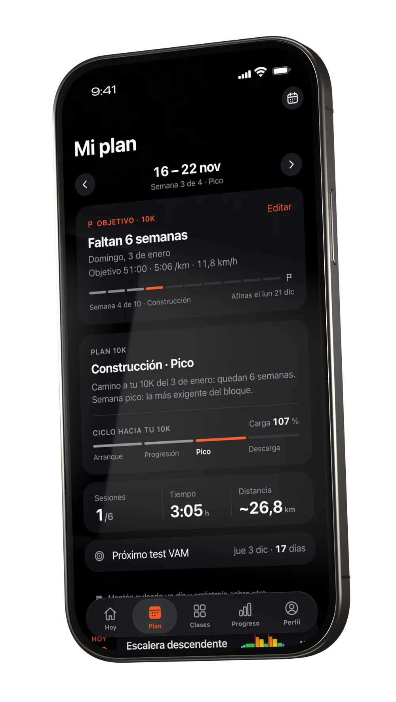
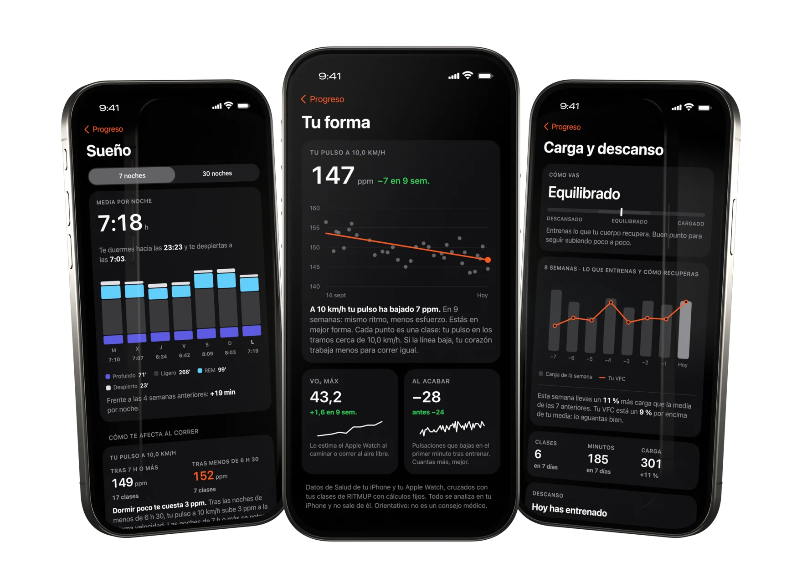

Mirando la pared.
Sin saber a qué ritmo ir.
Y a los diez minutos, ganas de bajarte.
Se acabó.

Lucía avisa.
Tú subes.
Diez segundos antes de cada cambio te dice qué viene. Cuenta tres, dos, uno y pulsas el + de la cinta.
RITMUP no se conecta a la máquina: la velocidad la marcas tú. Por eso funciona con cualquier cinta.Dónde corres hoy
canciones.
Cambian a compás.
Cuando cambia el tramo, cambia la pista, justo en el compás. Mucho techno melódico y trance. ¿Prefieres la tuya? Spotify, Apple Music o YouTube, y Lucía habla por encima.
Tu pulso, en la muñeca.

Pulso y zona en directo, en la muñeca y en el iPhone.
Si se te dispara, Lucía te baja el ritmo. Si vas sobrado, te lo sube.
El aviso también vibra en la muñeca. Empieza, pausa y salta de tramo desde el reloj.
Hoy cuestas.
Mañana fartlek.
- Intervalos26
- Fartlek17
- Cuestas16
- Retos16
- Resistencia15
- Tempo14
- Recuperación8
- Test VAM1
113 clases, de 20 a 60 minutos. Las cuestas, si tu cinta tiene inclinación.

Datos de ejemplo
Ponle fecha a tu carrera.
El plan te lleva semana a semana. Y ese día la clase es la carrera: salida, un arco por kilómetro y meta en la distancia exacta.
¿Sin carrera? Cada cuatro semanas el plan elige qué trabajar según lo que más te cuesta y cambia el tipo de tu sesión clave.
Mide a qué velocidad vas.
El Test VAM sube 0,5 km/h cada minuto hasta que no puedas más. Con eso ajusta tus cuatro velocidades.
Duermes mal.
Tu pulso lo sabe.
RITMUP cruza lo que dice Salud con tus clases. Al terminar cada una ves su análisis, y semana a semana tu evolución: pulso, velocidades y semanas flojas. Cálculos fijos, y si aún no hay datos suficientes te lo dice. Nada sale de tu iPhone.

Datos de ejemplo